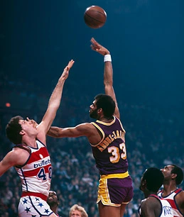
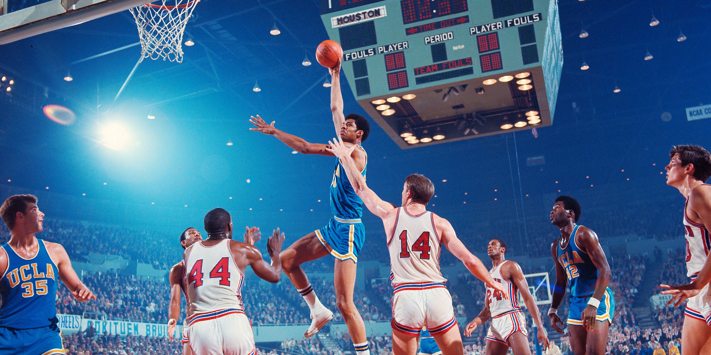
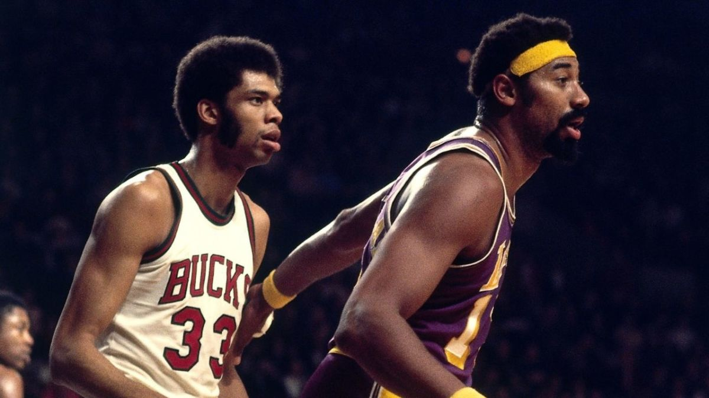

Kareem Abdul-Jabbar, nato Ferdinand Lewis Alcindor Jr. (New York, 16 aprile 1947), è un ex cestista e allenatore di pallacanestro statunitense, professionista nella NBA.
Alto 219 centimetri, giocava come centro. Con 38 387 punti segnati è il primo realizzatore nella storia dell'NBA, nonché il terzo miglior stoppatore e rimbalzista.
Distintosi già nel periodo universitario, tanto da essere stato la prima scelta al Draft del 1969, si mise subito in evidenza per le qualità di marcatore, imponendo le sue doti fisiche e tecniche. Nel 1971 cambiò il nome in seguito alla conversione all'Islam.
«Kareem da solo riesce a combinare molto bene le capacità nelle quali eccellevano Bill Russell e Wilt Chamberlain»
(Bob Cousy)
Dotato di un fisico molto possente (a 14 anni superava i due metri di altezza), era anche veloce ed estremamente tecnico: non si era mai visto un centro capace di segnare un gran numero di punti, essere molto efficace nei rimbalzi (media di circa 15 per partita), stoppare gli avversari con facilità, fornire assist con l'abilità di un playmaker, andare al tiro con ottima precisione, dimostrando inoltre una classe ed un'eleganza rare per un centro.

Lew Alcindor guidò la "Power Memorial Academy" di Harlem a tre titoli del campionato "New York City Catholic" di fila, e ad un record incredibile di 71 vittorie consecutive.
Dopo il grande successo riscontrato al liceo, Lew Alcindor passò all'università, scegliendo la UCLA ("University of California, Los Angeles"), per la quale giocò dal 1967 al 1969, squadra allenata dal leggendario allenatore John Wooden. Durante le tre stagioni che passò all'università, la squadra della UCLA perse solamente 2 partite.
Proprio durante il periodo del giovane Alcindor a UCLA, la NCAA varò - per limitarne lo strapotere fisico - una regola (in seguito abolita) inimmaginabile per uno sport spettacolare come la pallacanestro, ovvero l'abolizione della schiacciata. Tale discutibile decisione, anziché sfavorire il gigante di Harlem, gli consentì di affinare soluzioni d'attacco come il famoso gancio cielo (che diventerà il suo marchio di fabbrica) e di ricorrere sistematicamente alla stoppata come arma difensiva.
In quegli anni subì un piccolo infortunio all'occhio sinistro, un lieve danno alla retina, che lo costrinse da quel momento in poi a giocare con degli occhiali protettivi.
Nel 1964, mentre era ancora all'università, Lew Alcindor si convertì all'Islam, assumendo il nuovo nome arabo Kareem Abdul-Jabbar nel 1971.

Nel 1969 fu la prima scelta nel draft della NBA. Dopo essersi laureato, Alcindor passò a giocare con i Milwaukee Bucks dove vinse un titolo nella stagione 1970-1971 insieme a Oscar Robertson e, dal 1975, con i Los Angeles Lakers, dove raggiunse la consacrazione grazie anche alla presenza in squadra di un giocatore fenomenale come Magic Johnson. A Los Angeles vinse altri 5 titoli. Nell'arco della sua carriera venne eletto 6 volte miglior giocatore dell'anno.
Abdul-Jabbar è stato molto famoso per un suo tiro particolare, il cosiddetto gancio cielo (sky hook), praticamente impossibile da difendere e stoppare, supportato da un incredibile atletismo e forma fisica. Si ritirò nel 1989, dopo ben 20 stagioni. Quando Kareem si ritirò, a 42 anni, chiuse la carriera con 38 387 punti e 57 446 minuti giocati: questo risultato lo rese il miglior marcatore di sempre nella NBA e il giocatore con il maggior numero di minuti giocati.
La sua maglia n.33 è stata ritirata sia dai Lakers che dai Bucks. Per onorare la sua grande carriera e i successi ottenuti, i Lakers hanno fatto costruire una statua in suo onore, che è esposta a partire dal 26 novembre 2012 a fianco di quella dedicata a Magic Johnson.